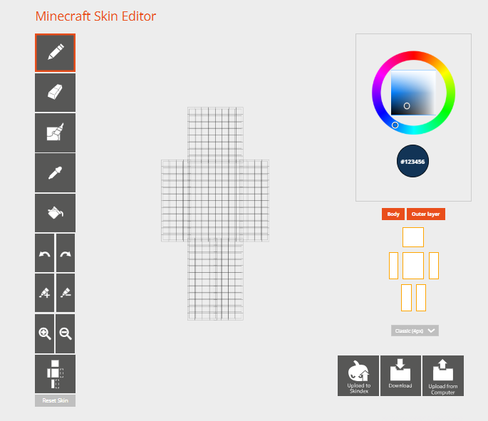
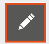
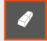
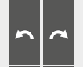
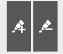
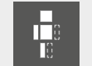
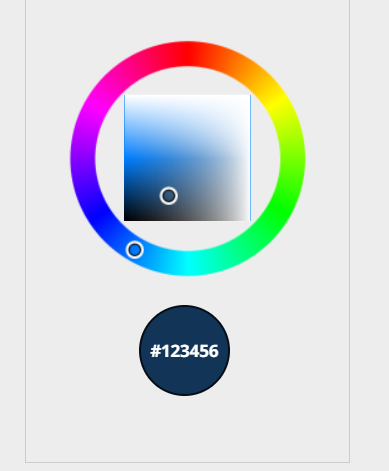
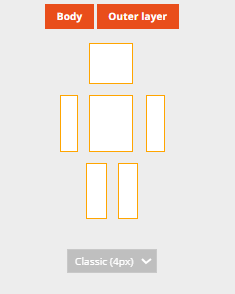
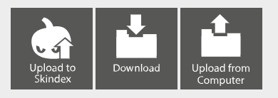

使用するツール
初めにスキン編集ツールを用意します。
今回使用するソフトは 『The Skindex』。
ダウンロード不要のブラウザで作動するソフトで、 他ソフトと比較すると パーツ分けやフィルター機能等の無い シンプルさが特徴になります。
後から色合いの調節や パーツ分け等詳細な機能が欲しくなった場合は、 『Novaskin』 を使用してください。
Novaskin については別回で少しだけ触れる予定。
ここでは Skindex メインで解説します。
Skindexの起動方法について
Google Chrome、 Microsoft Edge、 Safari等ブラウザを立ち上げ、 『skindex』と検索してください。
Skindexにアクセスしたら Editor をクリックして編集開始。
Editorの操作方法について
こちらが基本画面になります。
視点操作をするには 左カーソルでキャラクターを 回転させてください。
|
 |
【各種ボタンについて】
|
  |
ペンボタンと消しゴム。 基本のツールになります。
筆。 個人的にほとんど使わないツールですが、 これで塗ったときに色のブレが綺麗に発生します。
服のしわや肌、髪の毛など あらゆるパーツの質感の表現に使えます。
スポイト。 このツールを使用して キャラクターから色を拾うことが出来ます。
塗りつぶし。 このソフトでは 1つの面を完全にその色で塗りつぶします。
|
 |
undo(左)とredo(右)。 少し前の作業を取り消したり、 取り消したことを キャンセルしたりできる便利機能です。
|
 |
今使用している色を 暗くしたり、 明るくしたり出来ます。
拡大と縮小。 キャラクターが小さくて 作業しにくい場合に。
|
 |
ミラーツール。 オンにしていると 片方の腕や脚を塗ったときに もう片方も同じ色が 同じ位置に塗られます。
|
 |
|
 |
『body』 は1枚目のレイヤーで、 『Outer layer』 は2枚目のレイヤー。
この2つのレイヤーは立体を表現するときに重要な部分になります。
立体については次回詳しく説明します。
『Classic 4px』については 腕の太さです。
3pxか4px
選択可能で、
3px:女の子や中性寄りのキャラ向け
4px:男性キャラや大柄体型のキャラ向け
の太さだと思ってください。
|
 |
左から 『Skindexに投稿』 『ファイルに保存』 『端末からアップロード』
右から2つは所謂セーブ&ロード機能と思ってください。
この講座では投稿については説明しません。
まとめ
第1回は主に エディターの起動方法・操作方法 を解説しました。
今回の 基本操作編 がマニュアルになりますので、 何の機能か分からなくなった場合は もう一度確認をしたり、ご自身で再チェックしてください。